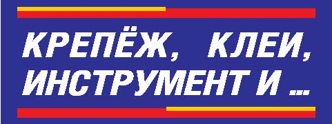

MITEX 2026 · Россия · Стенд 6А702
Крепёж, клеи, инструмент и…
Карточка проверена 10 ноября 2026, 09:25 · Источник ↗ · Снимок оригинальной карточки ↗
О компании
Журнал-справочник «Крепёж, клеи, инструмент и...» издаётся с 2002 года и содержит информацию о выборе крепёжных изделий и систем, базовые справочные материалы, сведения о современных изделиях и монтажных технологиях и др. Материалы о его публикациях размещаются в Реферативном журнале ВИНИТИ РАН. Партнёры журнала: ведущие зарубежные и российские изготовители и продавцы крепежа, клеевых материалов, инструмента; зарубежные специализированные издания. Журнал «Крепёж, клеи, инструмент и...» – соорганизатор отраслевых круглых столов и конференций. Главный редактор журнала Александр Осташёв – координатор Клуба российских поставщиков крепежа, член Наблюдательного совета Крепёжного союза. Сайт журнала www.fastinfo.ru
Контакты
Все контактные сведения из карточки
Контакты 194362, Санкт-Петербург, пос. Парголово, Выборгское шоссе, д. 417А, Котельникову Д.А. Телефон: +79213686400 E-mail: info@fastinfo.ru Адрес: 194362, Россия, Санкт-Петербург, Санкт-Петербург, пос. Парголово, Выборгское шоссе, д. 417А Веб-сайт: http://www.fastinfo.ru E-mail: info@fastinfo.ru Телефон: +79213686400
Все рубрики участника
Mitex - Рубрикатор
- 4. Инструмент и оборудование для строительно-монтажных, окрасочных и малярных работ
- 5. Слесарный, монтажный, столярный, ручной инструмент
- 12. Крепеж, метизы, скобяные изделия
Зал
- Зал № 6
Участник выставки
- MITEX
Фотографии и изображения
Видео, каталоги и документы
В доступной карточке нет видео или документов. Смотрите сайт участника.